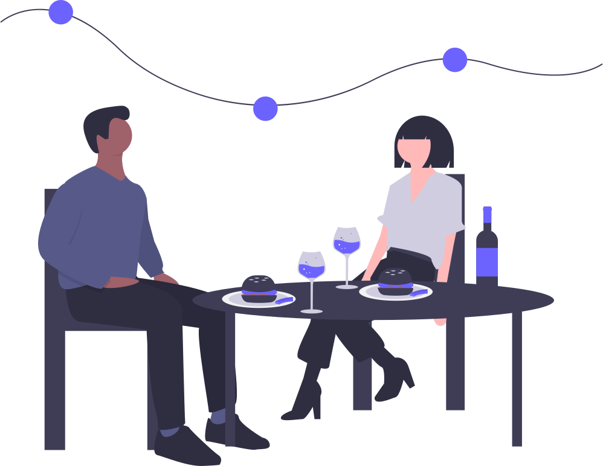
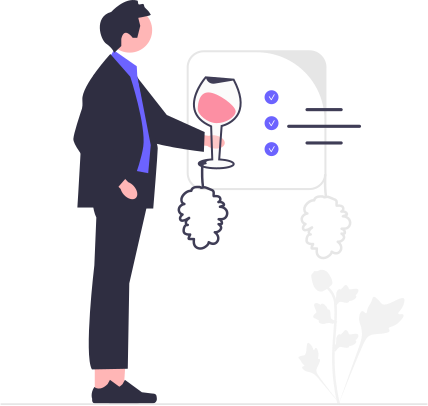

Recent Projects
Merging technical expertise with creativity, I have delivered
impactful solutions that streamline operations, enhance user
experience, and drive innovation. Here are some of my highlights:
Scalable Data Platform on AWS
Built a data pipeline with Apache Spark on AWS, processing 10M+
records with 70% faster analytics, and integrated ML models with
93.8% accuracy for real-time predictions.

Pustak – Book Management Platform
Developed a Django-powered app for book exchange, integrating
BeautifulSoup for web scraping and deploying on Heroku with robust
user authentication and APIs.

Hotel Management System – MakeMyTrip
Spearheaded fraud prevention and compliance features, while
designing a GSTN validation system with Kafka and Redis, reducing
workload by 4 person-days daily.

SpicyDen – Restaurant App
Built a restaurant application using AngularJS with scalable
components, implementing testing workflows to ensure high-quality
code and seamless service management.